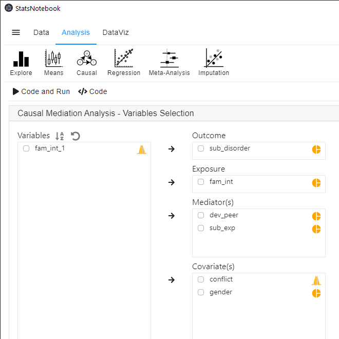
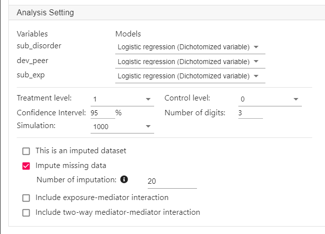

Mediation analysis is a technique that examines the intermediate process by which the indepedent variable affects the dependent variable. For example, family intervention during adolescence (independent variable) can reduce engagement with deviant peer group (mediator) and their experimentation with drugs, which in turn reduce risk of substance use disorder in young adulthood (dependent variable).
StatsNotebook uses the cutting edge counterfactual framework and Monte Carlo technique to conduct causal mediation analysis. It can handle
Since Monta Carlo method is very computationally intensive, it might take a long time to compute the mediation effect. Especially if there are missing data and multiple imputation is used.
In this example, the dependent variable is substance use disorder and the independent variable is family intervention. There are two mediators: engaged with deviant peer group and experimentation with drugs.
We will firstly show the R codes for this analysis below, and will provide a step-by-step guide on how to complete this analysis. We use the built-in substance dataset in this example. This dataset can be loaded into StatsNotebook using instruction here.
In this dataset,
The first section of the codes is for imputing missing data. In the second section, we use the mediate function from the intmed package to conduct mediation analysis.
currentDataset$fam_int_1 = NA
currentDataset$fam_int_1[currentDataset$fam_int == "1"] <- 1
currentDataset$fam_int_1[currentDataset$fam_int == "0"] <- 0
"Multiple imputation"
library(mice)
formulas <- make.formulas(currentDataset)
formulas$gender =gender ~ conflict + sub_disorder + fam_int_1 + dev_peer + sub_exp
formulas$conflict =conflict ~ gender + sub_disorder + fam_int_1 + dev_peer + sub_exp
formulas$sub_disorder =sub_disorder ~ gender + conflict + fam_int_1 + dev_peer + sub_exp
formulas$fam_int_1 =fam_int_1 ~ gender + conflict + sub_disorder + dev_peer + sub_exp
formulas$dev_peer =dev_peer ~ gender + conflict + sub_disorder + fam_int_1 + sub_exp
formulas$sub_exp =sub_exp ~ gender + conflict + sub_disorder + fam_int_1 + dev_peer
meth <- make.method(currentDataset)
imputedDataset <- parlmice(currentDataset,
method = meth,
formulas = formulas,
m = 20,
n.core = 1,
n.imp.core = 20)
plot(imputedDataset)
currentDataset <- complete(imputedDataset, action = "long", include = TRUE)
"Causal Mediation Analysis"
med_res <- intmed::mediate(y = "sub_disorder",
med = c("dev_peer" ,"sub_exp"),
treat = "fam_int_1",
c = c("gender" ,"conflict"),
ymodel = "logistic regression",
mmodel = c("logistic regression" ,"logistic regression"),
treat_lv = 1, control_lv = 0, incint = FALSE, inc_mmint = FALSE,
conf.level = 0.95,
data = currentDataset, sim = 1000, digits = 3,
HTML_report = FALSE, complete_analysis = FALSE,
imputed_data = TRUE)
Prior to running the causal mediation analysis, we will need to conduct descriptive analysis and it is always a good practice to visualise the data.
To run a causal mediation,


Below is the output from StatsNotebook. The analysis is conducted using the intmed package and most of the outputs are self-explanatory.
There were 25.86% cases with missing data. Multiple imputation was used to impute missing data (Rubin, 2009) and 20 datasets were imputed using the R package MICE (van Buuren, 2010).
The table below shows the estimates from the key regression models for the mediation analysis.
variables m1.b m1.ci m1.p m2.b m2.ci m2.p
1 (Intercept) 0.708 (0.388, 1.292) 0.260 0.980 (0.536, 1.791) 0.947
2 conflict 1.220 (0.963, 1.545) 0.099 1.213 (0.953, 1.544) 0.117
3 genderMale 1.234 (0.861, 1.771) 0.252 1.156 (0.804, 1.661) 0.434
4 fam_int_1 0.517*** (0.358, 0.747) 0.000 0.539** (0.369, 0.788) 0.001
5 dev_peer1 <NA> <NA> <NA> <NA> <NA> <NA>
6 sub_exp1 <NA> <NA> <NA> <NA> <NA> <NA>
y.b y.ci y.p
1 0.061*** (0.019, 0.200) 0.000
2 0.820 (0.531, 1.267) 0.371
3 1.396 (0.779, 2.501) 0.262
4 0.603 (0.331, 1.102) 0.100
5 4.132*** (1.891, 9.031) 0.000
6 1.745 (0.739, 4.123) 0.203
Mediation analysis was performed based on the counter-factual framework and the interventional effect (Vansteelandt and Daniel, 2017; Chan and Leung, 2020). The analysis was conducted in R using the intmed package (Chan and Leung, 2020) with 1000 simulations.
effect est ci
1 indirect effect through mediator 1 -0.018 (-0.037, -0.004)
2 indirect effect through mediator 2 -0.007 (-0.021, 0.004)
3 indirect effect through interaction between mediators 0.001 (-0.002, 0.005)
4 indirect effect through dependence between mediators 0.000 (-0.009, 0.009)
5 direct effect -0.055 (-0.120, 0.010)
6 total effect -0.077 (-0.143, -0.016)
7 proportion of effect through mediator 1 0.218
8 proportion of effect through mediator 2 0.078
p
1 0.005
2 0.202
3 0.448
4 0.975
5 0.099
6 0.011
7
8
Reference
Rubin DB. Multiple imputation for nonresponse in surveys. New York: John Wiley & Sons; 2009.
Buuren Sv, Groothuis-Oudshoorn K. mice: Multivariate imputation by chained equations in R. Journal of statistical software. 2010:1-68.
Vansteelandt S, Daniel RM. Interventional effects for mediation analysis with multiple mediators. Epidemiology (Cambridge, Mass). 2017; 28(2):258.
Chan G, Leung J. Causal mediation analysis using the interventional effect approach. A refined definition. Paper uner review. 2020.
There are two key sections of the outputs: Results from regression models and Results from mediation analysis.
Results from regression models
Behind the scene, three key regression models are run.
The table below from the StatsNotebook summarises the odds ratio, 95% confidence intervals and p-value from these three models. With a significance level of 0.05, the results indicate that participation in family intervention reduces the odds of engagement with deviant peers, OR = 0.517, 95% CI (0.358, 0.747) and experimentation with drugs, OR = 0.539, 95% CI (0.369, 0.788). Family intervention may reduce odds of substance use disorder directly, OR = 0.603, 95% CI (0.331, 1.102), but this effect is not statistically significant. Engagement with deviant peers increased the odds of substance use disorder, OR = 4.132, 95% CI (1.891, 9.031). Experimentation with may increase the odds of substance use disorder, OR = 1.745, 95% CI (0.739, 4.123), but this effect is not statistically significant.
The table below shows the estimates from the key regression models for the mediation analysis.
variables m1.b m1.ci m1.p m2.b m2.ci m2.p
1 (Intercept) 0.708 (0.388, 1.292) 0.260 0.980 (0.536, 1.791) 0.947
2 conflict 1.220 (0.963, 1.545) 0.099 1.213 (0.953, 1.544) 0.117
3 genderMale 1.234 (0.861, 1.771) 0.252 1.156 (0.804, 1.661) 0.434
4 fam_int_1 0.517*** (0.358, 0.747) 0.000 0.539** (0.369, 0.788) 0.001
5 dev_peer1 <NA> <NA> <NA> <NA> <NA> <NA>
6 sub_exp1 <NA> <NA> <NA> <NA> <NA> <NA>
y.b y.ci y.p
1 0.061*** (0.019, 0.200) 0.000
2 0.820 (0.531, 1.267) 0.371
3 1.396 (0.779, 2.501) 0.262
4 0.603 (0.331, 1.102) 0.100
5 4.132*** (1.891, 9.031) 0.000
6 1.745 (0.739, 4.123) 0.203
Results from mediation analysis
The second table shows the results from mediation analysis.
Mediation analysis was performed based on the counter-factual framework and the interventional effect (Vansteelandt and Daniel, 2017; Chan and Leung, 2020). The analysis was conducted in R using the intmed package (Chan and Leung, 2020) with 1000 simulations.
effect est ci
1 indirect effect through mediator 1 -0.018 (-0.037, -0.004)
2 indirect effect through mediator 2 -0.007 (-0.021, 0.004)
3 indirect effect through interaction between mediators 0.001 (-0.002, 0.005)
4 indirect effect through dependence between mediators 0.000 (-0.009, 0.009)
5 direct effect -0.055 (-0.120, 0.010)
6 total effect -0.077 (-0.143, -0.016)
7 proportion of effect through mediator 1 0.218
8 proportion of effect through mediator 2 0.078
p
1 0.005
2 0.202
3 0.448
4 0.975
5 0.099
6 0.011
7
8
Since sub_disorder is a dichotomised variable, the estimates are in probability scale. Overall, the total effect of fam_int is -0.077, indicating that participation in family intervention reduces the probability of sub_disorder by 0.077 (i.e. 7.7%). Of this total effect, 0.018 (est = -0.018, 95% CI [-0.037, -0.004]) is significantly mediated through dev_peer and 0.007 (est = -0.007, 95% CI [-0.021, 0.004]) is mediated through sub_exp. Overall, it is estimated that 21.8% of the total effect is mediated through dev_peer and 7.8% through sub_exp.